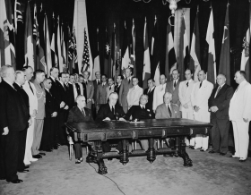

The Philippines has had a total of six constitutions since the Proclamation of Independence on June 12,
1898. In 1899, the Malolos Constitution, the first Philippine Constitution—the first republican constitution
in Asia—was drafted and adopted by the First Philippine Republic, which lasted from 1899 to 1901.
During the American Occupation, the Philippines was governed by the laws of the United States of America.
Organic Acts were passed by the United States Congress for the administration of the Government of the
Philippine Islands. The first was the Philippine Organic Act of 1902, which provided for a Philippine
Assembly composed of Filipino citizens. The second was the Philippine Autonomy Act of 1916, which included
the first pledge of Philippine independence. These laws served as constitutions of the Philippines from 1902
to 1935.
In 1934, the United States Congress passed the Philippine Independence Act, which set the parameters for the
creation of a constitution for the Philippines. The Act mandated the Philippine Legislature to call for an
election of delegates to a Constitutional Convention to draft a Constitution for the Philippines. The 1934
Constitutional Convention finished its work on February 8, 1935. The Constitution was submitted to the
President of the United States for certification on March 25, 1935. It was in accordance with the Philippine
Independence Act of 1934. The 1935 Constitution was ratified by the Filipino people through a national
plebiscite, on May 14, 1935 and came into full force and effect on November 15, 1935 with the inauguration
of the Commonwealth of the Philippines. Among its provisions was that it would remain the constitution of
the Republic of the Philippines once independence was granted on July 4, 1946.
In 1940, the 1935 Constitution was amended by the National Assembly of the Philippines. The legislature was
changed from a unicameral assembly to a bicameral congress. The amendment also changed the term limit of the
President of the Philippines from six years with no reelection to four years with a possibility of being
reelected for a second term.